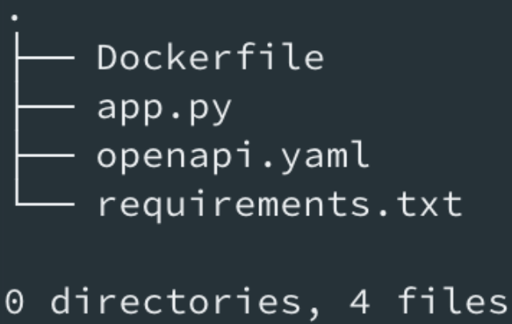
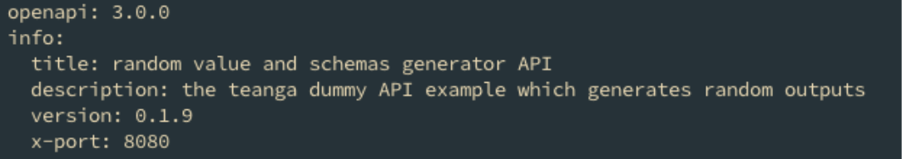
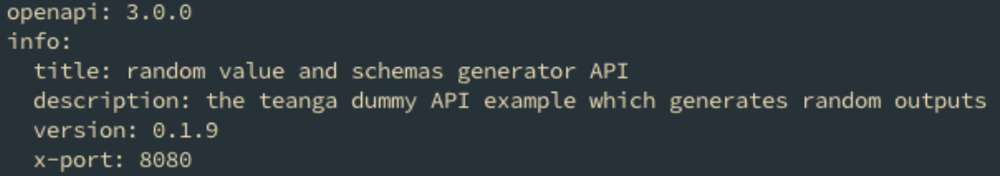
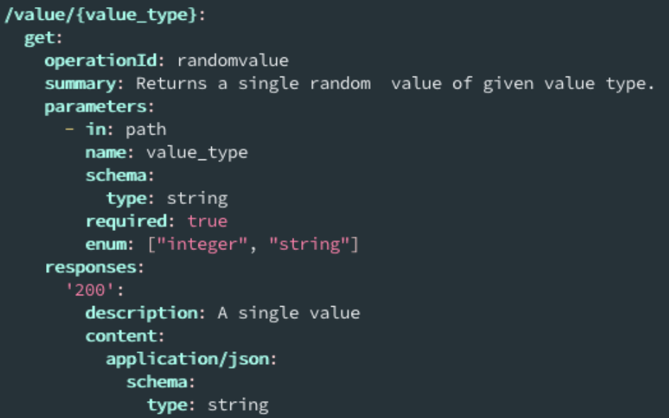
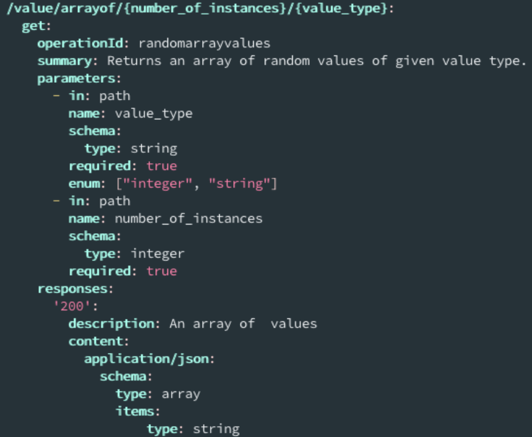
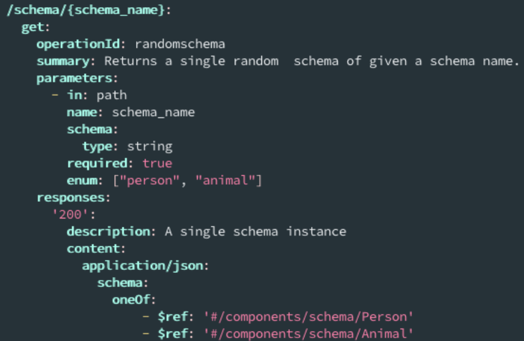

How to create a service in Teanga¶
Teanga is a workflow manager and service in a Teanga workflow is a dockerized application which Teanga can make requests to in some port.
Services in Teanga must be a REST API that returns JSON-LD outputs. There are 4 essential steps to make a rest api to work in Teanga:
Creating a Rest API app
- Create an application that receives http requests
- Expose your application in some port (8080 is recommended)
- Return a valid json format as output
Describing the Rest API with OpenAPI specification
- Inform the port of the application in the info section of the file
- Describe all your endpoints in the paths section of the file
Dockerizing your api
- Copy the openapi.yaml file to the root of the docker container “/openapi.yaml”
Publishing the Docker Image on Docker Hub
- create an account in Docker Hub
- upload docker image
As an pratical example we will go through a step by step process to how to make one python application you might have suitable for running in Teanga. In the end of the tutorial our service will be published in docker hub and have a folder with the following files :
The whole code is the Teanga official repository here
Where app.py is a simple application that will run on port 8080 inside of the docker image we will create using a Dockerfile and described with the openapi.yaml file.
1. Creating a Rest API¶
- Requirements:
- Expose your application in some port (8080 is recommended)
- Return a valid json format as output
We will create a dummy application that will have one endpoint for each of the possible output Teanga can handle. We will be creating a very simple Rest API in python using the flask framework. Each step of our application will be an endpoint of our Rest API. For instance:
| Service Endpoint | Inputs | Output |
|---|---|---|
| “single_value/<value>” | value_type: Integer, String | Random value of given type |
| “arrayof/<value>” | value_type(Integer, String), N | An array of random values of given type |
| “schema_instance/<schema_name>” | Schema_name(Person, Animal) | One random instance of the schema |
| “arrayof_schema_instances/<schema_name>” | Schema_name(Person, Animal), N | An array of instances of the given schema |
Inside app.py we will create a Flask app adding the code available in this link. I will not go in details of the implementation as it is not the goal of this tutorial but the full code is available here
2. Describing the API with openapi specification¶

- Requirements:
- Inform the port of the application in the info section of the file
- Describe all your endpoints in the paths section of the file
Creating an openapi specification is very flexible, so I will follow the basic structure suggested in their documentation as a guideline. We will create an openapi.yaml file having an info section about general information of our application and a paths section describing each endpoint.
Inside the openapi.yaml you should use openapi version 3.0.0 and have an info section describing your service :
Describing the endpoints:
“/value/{value_type}”
“/value/arrayof/{number_of_instances}/{value_type}”
“/schema/{schema_name}”
“schema/arrayof/{number_of_instances}/{schema_name}”

{kind=link}
{kind=link}
{kind=link}
{kind=link}
{kind=link}
{kind=link}
{kind=link}